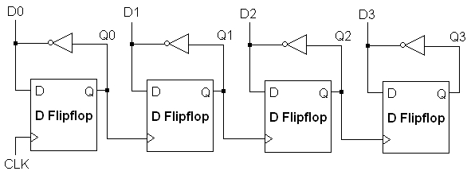
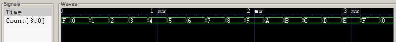

Next: Utility Modules, Previous: Logic Gates, Up: Introduction to libLCS
In this section, we will present the concept of system time, the class Clock, the off-the-shelf
flipflop modules, and the module FrequencyDivider.
The libLCS simulation system has a system timer. This timer is turned on automatically whenever a libLCS simulation is
started. The timer starts ticking up from time zero until the stop-time. As presented in the section A Simple Example,
a libLCS simulation starts with a call to the static member function Simulation::start(). A simulation lasts for
the duration for which the system timer was set to run for. The stop time has to be set by a call to the static
member function Simulation::setStopTime(unsigned int).
Clock
Apart from a system timer, the libLCS simulation system also has a clock provided through the singleton class
Clock. It is defined in the header file lcs/clock.h. It is essestially a pulse generator with equal high
and low periods. It should be obtained through the static function Clock::getClock(). By default, the pulse width
is set to 100 system time units (equivalent to a time period of 200 system time units). It can be set to a value of one's
choice by using the static member function Clock::setPulseWidth(unsigned int). A detailed example, which illustrates
the use of a clock, is presented in a later subsection below.
There exist of-the-shelf modules for D and JK flipflops in libLCS. They are provided as template classes requiring two template parameters. The first template parameter determines if the flipflop is positive edge triggered or negetive edge triggered. The second template parameter determines the input to output propogation delay of the flipflop. The following are the template class declarations for the flipflop modules.
template<PulseEdge type = POS_EDGE, unsigned int delay = 0>
class DFlipFlop;
template<PulseEdge type = POS_EDGE, unsigned int delay = 0>
class JKFlipFlop;
PulseEdge. The first template parameter
in the above class declarations is of this type. It takes a default value of POS_EDGE which specifies a positive
edge triggered flipflop. The other value it can take is NEG_EDGE which indicates a negetive edge triggered
flipflop.
The following is the list of all flipflop modules and the corresponding header files in which the flipflop module classes are defined.
lcs/dflipflop.h
lcs/jkflipflop.h
In this subsection, we will present an example which illustrates the use of the system timer, the system clock and the D-flipflop modules. The aim of the example is to construct and simulate a 4-bit counter using D-flipflops. The circuit diagram is as below. The bit sequence D3D2D1D0 in that order is the output of our counter circuit.
The following is the full listing of the program which constructs and simulates the circuit shown in the above figure. There exists a general rule with all flipflop module class constructors. The outputs of the modules will be the passed as arguments to the constructors before the inputs are passed as arguments. In case of D-flipflops, the first argument to the flipflop constructor is the Q output. The next arguments are the D input, clock input, and the active-high reset input in that order. (In case of a JK-flipflop, the order of arguments to the constructor is as follows: the Q output, J input, K input, clock input, the active-high reset input. All arguments are single-line bus objects.)
#include <lcs/lcs.h>
using namespace lcs;
using namespace std;
int main(void)
{
// Declare single line busses for each node in the
// circuit. The flipflop output nodes have been set
// to zero to start with. The busses are initialised
// with the default template parameter of 1. The reset
// line to be used for all the flipflops has been set
// to 0.
Bus<> q0(0), q1(0), q2(0), q3(0), d0, d1, d2, d3, rst(0);
// Initialise a clock object.
Clock clk = Clock::getClock();
// Initialise the NOT gates in the circuit. The NOT
// gates are initialised with the default template
// parameter corresponding to a propogation delay of
// zero.
Not<> n1(d0, q0), n2(d1, q1), n3(d2, q2), n4(d3, q3);
// Initialise the 4 positive edge-triggered flipflops
// using the default template parameters.
DFlipFlop<> ff1(q0, d0, clk, rst), ff2(q1, d1, q0, rst),
ff3(q2, d2, q1, rst), ff4(q3, d3, q2, rst);
// Initialise a ChangeMonitor object to monitor
// the output bit sequence of our counter circuit.
ChangeMonitor<4> count((d0,d1,d2,d3), string("Count"), DUMP_ON);
Simulation::setStopTime(4000); // Set the stop time.
Simulation::start(); // Start the simulation.
return 0;
}
When the above program is compiled and executed, the following output is obtained on the standard output.
At time: 0, Count: 1111 At time: 100, Count: 0000 At time: 300, Count: 0001 At time: 500, Count: 0010 At time: 700, Count: 0011 At time: 900, Count: 0100 At time: 1100, Count: 0101 At time: 1300, Count: 0110 At time: 1500, Count: 0111 At time: 1700, Count: 1000 At time: 1900, Count: 1001 At time: 2100, Count: 1010 At time: 2300, Count: 1011 At time: 2500, Count: 1100 At time: 2700, Count: 1101 At time: 2900, Count: 1110 At time: 3100, Count: 1111 At time: 3300, Count: 0000 At time: 3500, Count: 0001 At time: 3700, Count: 0010 At time: 3900, Count: 0011Since the
ChangeMonitor object for the output has been initialed with DUMP_ON, a VCD file for the
simulation is generated. The following is the screenshot of the GTKWave plot of the generated VCD file.

FrequencyDivider
libLCS provides a module which divides the frequency of the input signal by a specified factor. This module, defined in
the file lcs/freqdiv.h, is provided as a template class with the following declaration.
template<unsigned int factor, unsigned int delay = 0>
class FrequencyDivider;
The first template parameter factor specifies the factor by which the input frequency is divided. The second
template parameter delay, which takes a default value of 0, specifies the input to output propogation delay. The
example below illustrates the usage of a frequency divider module. It uses the system clock as an input to the frequency
divider which divides the clock frequency by 7. A zero delay module is used.
#include <lcs/lcs.h>
using namespace lcs;
using namespace std;
int main(void)
{
Bus<1> b;
Clock clk = Clock::getClock();
// A frequency divider, which divides
// the input clock frequecy by 7 and has
// a zero propogation delay, is declared.
// The first argument to the constructor
// is the output of the frequency divider,
// and the second argument is the input.
// In this case, we are using the system
// clock as the input.
FrequencyDivider<7> fd(b, clk);
ChangeMonitor<1> cm(clk, "clk");
ChangeMonitor<1> cb(b, "b");
Simulation::setStopTime(5000);
Simulation::start();
return 0;
}
When the above program is compiled and executed, the following output is obtained.
At time: 0, b: 0 At time: 100, clk: 1 At time: 100, b: 1 At time: 200, clk: 0 At time: 300, clk: 1 At time: 400, clk: 0 At time: 500, clk: 1 At time: 600, clk: 0 At time: 700, clk: 1 At time: 800, clk: 0 At time: 800, b: 0 At time: 900, clk: 1 At time: 1000, clk: 0 At time: 1100, clk: 1 At time: 1200, clk: 0 At time: 1300, clk: 1 At time: 1400, clk: 0 At time: 1500, clk: 1 At time: 1500, b: 1 At time: 1600, clk: 0 At time: 1700, clk: 1 At time: 1800, clk: 0 At time: 1900, clk: 1 At time: 2000, clk: 0 At time: 2100, clk: 1 At time: 2200, clk: 0 At time: 2200, b: 0 At time: 2300, clk: 1 At time: 2400, clk: 0 At time: 2500, clk: 1 At time: 2600, clk: 0 At time: 2700, clk: 1 At time: 2800, clk: 0 At time: 2900, clk: 1 At time: 2900, b: 1 At time: 3000, clk: 0 At time: 3100, clk: 1 At time: 3200, clk: 0 At time: 3300, clk: 1 At time: 3400, clk: 0 At time: 3500, clk: 1 At time: 3600, clk: 0 At time: 3600, b: 0 At time: 3700, clk: 1 At time: 3800, clk: 0 At time: 3900, clk: 1 At time: 4000, clk: 0 At time: 4100, clk: 1 At time: 4200, clk: 0 At time: 4300, clk: 1 At time: 4300, b: 1 At time: 4400, clk: 0 At time: 4500, clk: 1 At time: 4600, clk: 0 At time: 4700, clk: 1 At time: 4800, clk: 0 At time: 4900, clk: 1 At time: 5000, clk: 0 At time: 5000, b: 0